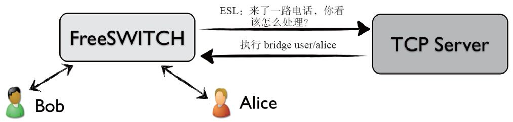
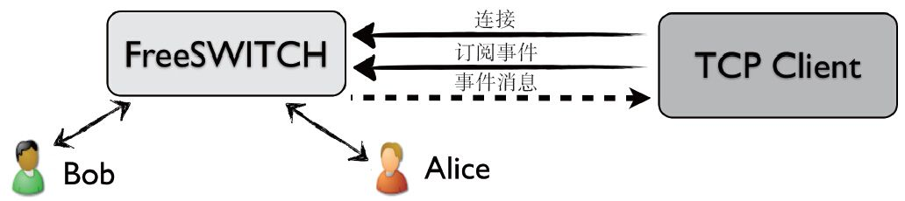

18.1 架构
Event Socket [1] 有两种模式：内连（Inbound）模式和外连（Outbound）模式。注意，这里所说的内和外都是针对FreeSWITCH而言的。
18.1.1 外连模式
如图18-1所示，FreeSWITCH作为一个TCP客户端连接到一个TCP Server上。那么这个TCP Server是谁呢？它是需要用户自己去实现的，实际上这就是用户需要开发的部分。在这个服务器里，用户可以实现自己的业务逻辑，以及连接数据库获取数据帮助决策等。

图18-1 Outbound ESL示意图
那么，怎么让FreeSWITCH去连接你的TCP Server呢？回想一下第7章。FreeSWITCH是一个B2BUA，当Bob呼叫Alice时，首先电话会到达FreeSWITCH（通过SIP），建立一个单腿的Channel（a-leg），然后电话进入路由状态，FreeSWITCH查找Dialplan，然后可以通过以下动作建立一个到TCP Server的连接：
<action application="socket" data="127.0.0.1:8040"/>
到此为止，还是只有一个Channel。其中socket是一个App，它会先把这个Channel置为Park状态，然后FreeSWITCH作为一个TCP客户端连接到TCP Server上，把当前呼叫的相关信息告诉它，并询问下一步该怎么做。当然，这里FreeSWITCH跟TCP Server说的语言称为ESL，该语言只有它们两个人懂，与SIP及RTP没有任何关系。也就是说，TCP Server只是发布控制指令，并不实际处理语音数据。
接下来，TCP Server收到FreeSWITCH的连接请求后，进行决策，如果它认为Bob想要呼叫Alice（根据来话信息和主被叫号码判断），它就给FreeSWITCH发一个执行bridge App的消息，告诉它应该继续呼叫Alice（给Alice发SIP INVITE消息）。
在Bob挂机之前，FreeSWITCH会一直向TCP Server汇报Channel的相关信息，所以这个TCP Server就可掌握这路电话所有的详细信息，也可以在任何时间对它们发号施令。
Bob挂机后，与TCP Server的连接也会断开，并释放资源。读到这里，读者应该明白了。之所以叫做TCP Server，是因为它应该是一个服务器应用，永远在监听一个端口（在上面的例子中是8040）等待有人连接。如果需要支持多个连接，这个服务器就应该使用Socket的Select机制或做成多线程（多进程）的。
我们上面说过，所谓Inbound和Outbound都是针对FreeSWITCH而言的。由于在这种模式下，FreeSWITCH要向外连接到TCP Server，因此称为外连模式。
18.1.2 内连模式
内边模式如图18-2所示。

图18-2 Inbound ESL示意图
在内连模式下，FreeSWITCH作为一个服务器，而用户的程序可以作为一个TCP Client主动连接到FreeSWITCH上。同样，FreeSWITCH允许多个客户端连接。每个客户端连接上来以后，可以订阅FreeSWITCH的一些内部事件。上面我们说过，FreeSWITCH要通过EventSocket向外部发送信息，这些信息就是以事件的形式体现的。同样，在内部好多功能也是事件驱动的。
用户的TCP Client收到这些事件后，可以通过执行App和API来控制FreeSWITCH的行为。
对于外连模式来讲，由于Socket来自一个App，而且它所连接的TCP Server也像是这个App功能的一部分，它们在Alice这个Channel的内部工作，与之相连的TCP Server发布的命令通常也是让FreeSWITCH执行一些App。只是在使用bridge APP桥接到Bob后这个Socket Server又好像是一个中间人或第三者。
对于内连模式，很明显外部的TCP Client是一个第三者，它通常不是Channel的一部分，而是监听到一个感兴趣的事件以后，通过API（uuid_一族的API）来对Channel进行操作。
[1] 参见http://wiki.freeswitch.org/wiki/Event_Socket。